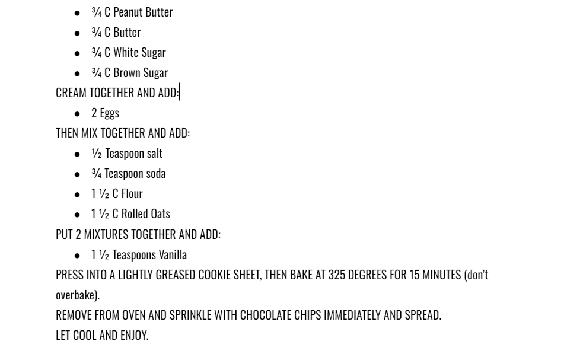

My mother always made this recipe while I was growing up and so when I went on my mission,
I made these in every area that I was in when I was homesick. It also allowed me to show the people of Uruguay
a little bit of the American culture. In South America, peanut butter is hard to find and very expensive,
but in the U.S., we use it all the time. When I would make these peanut butter bars for them, they would devour
them and then beg for more. I gave them the recipe so that they could make them when I was gone, and now I am
giving the recipe to you all. I hope that when you make these peanut butter bars, it brings you joy and that you can
share it with someone else. - Alyssa Serre
